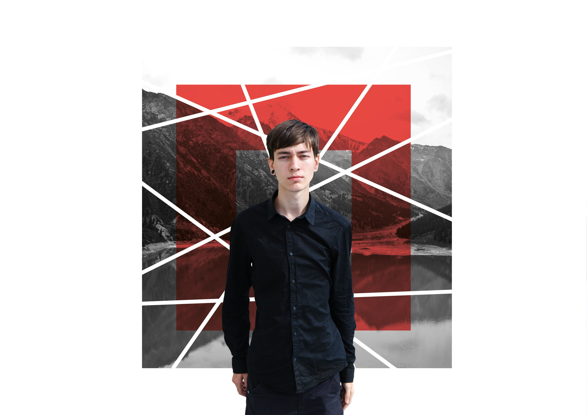
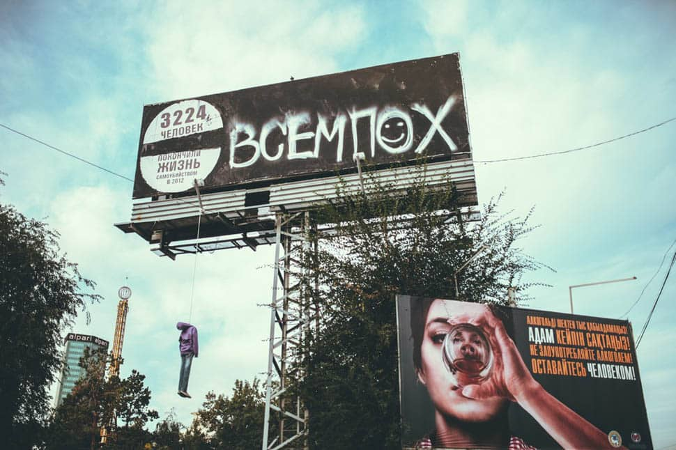
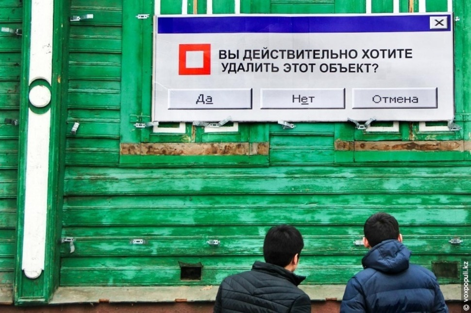

Паша Кас родился и вырос в Алматы. Парень имеет архитектурное образование. Сегодня он целиком и полностью погружен в свое творчество, главной целью которого является поднятие остросоциальных проблем и широкая их огласка обществу.

– Начинал я в 2010 году с граффити, а именно, с проекта «У стен есть уши». Эта работа стала самой распространенной. Но, после того как я узнал о стрит-арте, граффити ушло для меня на второй план, а вскоре и вовсе перестало интересовать. Граффити – это совершенствование техники рисования, в то время как стрит-арт подразумевает еще и содержательную, концептуальную часть, – дифференцирует понятия художник.

Прошлые проекты
Паша прославился рядом кричащих проектов, среди которых была работа «Всем ПОХ». Главной темой этого проекта было безразличие к проблеме суицидов. В проекте он указал цифру людей, покончивших жизнь самоубийством в 2012 году. Шокирующий билборд был приправлен не менее шокирующим манекеном, который художник повесил прямо под вывеской. К слову, работа не провисела и суток…

А этот проект Паша реализовал уже в 2015 году:
– Сносят старый центр, памятники архитектуры. На их месте открываются ларьки, стоянки. Ударными темпами уничтожается уникальная природа. В «городе яблок» нет яблонь – их мы покупаем в Узбекистане. Голоса экологов захлебываются в потоках рекламы этих новостроек. И это при том, что сейчас – год Культуры,
– поясняет street art художник.

Мы попросили Пашу также рассказать о проекте «Немножко параллельная реальность» 2014 года.
– Интересная ситуация с нашей официальной прессой. Журналистика, обслуживающая власть – парадокс? Нет, еще одна, параллельная реальность. Как-то мне попала в руки газета «Казахстанская Правда». Я, конечно, сразу обратил внимание на заголовки, которые как будто заимствуются из советской прессы. Такое ощущение, что вовсе и не было ни перестройки, ни 90-х – 25 лет прошло, а фактически ничего не изменилось.
Художник взял за основу газетную верстку доперестроечного времени и разместил на передовице уличного художника в маске, усилив контраст. Эта работа появилось рядом с Арбатом, в месте, где представлены работы, пожалуй, всех, кто так или иначе связан со стрит-артом.

.png)